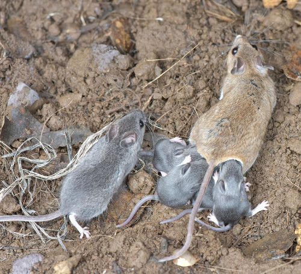

Deer Mouse
Peromyscus maniculatus mammal

Abundant native seed-eater and key prey for owls, hawks and foxes; disperses seeds and fungi.
2 documented plant relationships.
Peromyscus maniculatus mammal

Abundant native seed-eater and key prey for owls, hawks and foxes; disperses seeds and fungi.
2 documented plant relationships.
 Matt Berger, some rights reserved (CC BY), uploaded by Matt Berger")